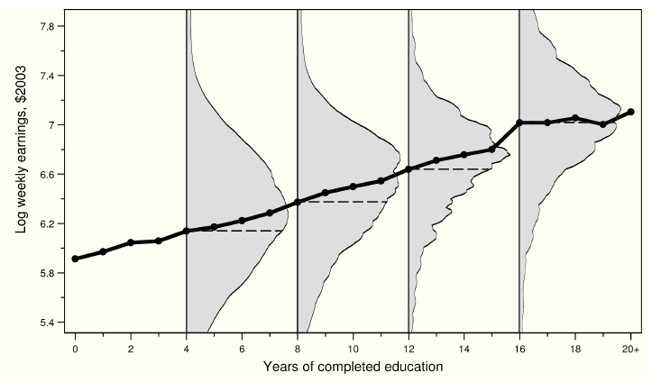
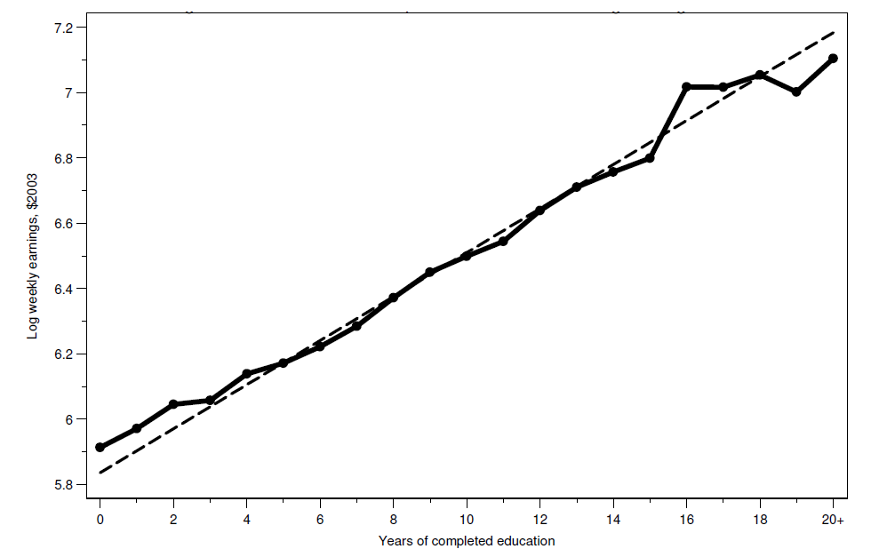

Clase 4. Regresión y efectos causales
Inferencia Causal
Irvin Rojas
rojasirvin.com
Centro de Investigación y Docencia Económicas División de Economía
Agenda
Motivar el uso de regresión para el análisis de efectos de tratamiento
Estudiaremos el supuesto de independencia condicional
Veremos un ejemplo de experimento aleatorio para relacionarlo con lo que ya sabemos y para identificar elementos que iremos descubriendo con el tiempo
Motivación del uso de regresión en evaluación
Regresión como función de esperanza condicional
Olvidemos por ahora la causalidad y centremonos en la conexión entre dos variables, \(y\) y \(s\) (ingreso y educación)
La función de esperanza condicional es una forma de describir la relación entre estas dos variables
Función de esperanza condicional: la FEC de \(y_i\) dado un vector de regresores \(X_i\) es la esperanza o promedio poblacional de \(y_i\) cuando mantenemos fijo \(X_i\) y se denota \(E(y_i|X_i)\)
Para representar una realización particular de \(X_i\) escribimos \(X_i=x_i\), por lo que la FEC es \(E(y_i|X_i=x_i)\)
Con \(y_i\) discreta, la FEC se expresa como
\[E(y_i|X_i=x_i)=\sum_t t P(y_i=t|X_i=x_i)\]
Ejemplo de FEC: salarios y educación en Estados Unidos
- La figura 3.3.1 en MHE muestra la FEC de salarios en Estados Unidos
- Para cada año de educación, vemos cuál es el (log) del ingreso semanal
- La figura muestra dos cosas principales:
- La clara relación positiva entre salarios y educación
- La gran variabilidad en salarios para un nivel de educación dado
Teorema de la regresión de la FEC
- MHE provee varias motivaciones de usar regresión al relacionar la función de regresión con la FEC
- Aquí vamos a rescatar el que considero más intuitivo
- Teorema de la regresión de la FEC: la función \(X_i'\beta\) es la aproximación lineal de mínimos errores cuadrados promedio de \(E(y_i|X_i)\): \[\beta=\arg\min_b E((E(y_i|X_i)-X_i'b) ^2)\]
- Lo que nos dice este teorema es que si yo quiero aproximar la FEC y mi criterio para obtener la mejor aproximación es un problema de mínimos cuadrados promedio, entonces lo mejor que puedo hacer es que mi aproximación sea \(X'\beta\)
Teorema de la regresión de la FEC
- Este teorema nos dice que si pensamos en en aproximar \(E(y_i|X_i)\), incluso aunque la FEC no sea lineal, la función de regresión nos da la mejor aproximación lineal
- Este teorema es lo más cercano a como interpretamos la regresión en evaluación pues más que querer predicciones de \(y\) para un individuo \(i\), nos interesa la relación promedio entre las variables
- Vale la pena notar que aquí hablamos de la función de regresión poblacional, es decir, aún tenemos que hablar sobre cómo estimarla
Teorema de la regresión de la FEC
- La figura 3.1.2 en MHE ilustra este teorema
- La línea sólida es la FEC de la relación años de educación - salario
- La línea sólida muestra los promedios del salario para cada año de educación
- La línea quebrada muestra la línea de regresión usando microdatos
- Graficar el coeficiente \(\beta\) que resulta al correr \(y_i=\alpha+\beta s_i+u_i\)
- El teorema de la regresión de la FEC dice que obtenemos la misma recta si hacemos una regresión de \(E(y_i|s_i)=\alpha+\beta s +u\)

- Es decir, calculamos las medias del salario para cada nivel de educación y luego se hacemos una regresión de las medias en función de los niveles de educación (dándole más peso a las observaciones que aportaron más datos a la media de cada nivel)
Modelos saturados
Son modelos de regresión donde incluimos una variable categórica para cada uno de los posibles valores que tomen las \(X_i\)
Del ejemplo con los datos de EUA, hay 21 posibles años de educación, entonces un modelo saturado es:
\[y_i=\alpha+\beta_1 c_{1i} + \beta_2 c_{2i} + \ldots + \beta_{21} c_{21i} + u_i\] donde \(c_{ji}=1\) si el individuo \(i\) tiene una educación \(s_{i}=j\)
- El \(j\)-ésimo coeficiente \(\beta_j\) es el efecto de tener el nivel de educación \(j\)
- Además, \(\alpha=E(y_i|s_i=0)\), se conoce como la categoría omitida
- Podemos escoger la categoría omitida que tenga más sentido
Modelos saturados
- Si tuviéramos dos características, sexo y urbano-rural, un modelo saturado incluye un término interacción:
\[y_i=\alpha+\beta_H x_{Hi} + \beta_R x_{Ri}+ \beta_{HR} x_{Hi}x_{Ri}+u_i\]
A los coeficientes \(\beta_H\) y \(\beta_U\) se les conoce como efectos principales
El término de interacción \(\beta_{HR}\) nos dice cómo cambia el ingreso entre individuos por tipo de localidad y por sexo
- Un modelo saturado, si usamos sexo y \(\tau\) categorías de educación, sería: \[y_i=\alpha+\beta_H x_{Hi}+\sum_{j=1}^{\tau} \beta_j c_{ji} + \sum_{j=1}^{\tau}\beta_{Hj}(x_{Hi}c_{ji}) + u_i\]
Regresión y causalidad
Regresión y causalidad
Lo que hemos visto hasta ahora nos dice que la regresión es nuestro mejor aproximación lineal a la FEC
Pero la regresión será causal solo si la FEC es causal
Con lo que hemos visto del modelo de resultados potenciales, podemos tener una interpretación causal de la FEC
- La FEC es causal cuando describe las diferencias en resultados potenciales promedio para una población de referencia fija (Angrist and Pischke, 2009)
- En la relación entre educación y salarios, una FEC causal describiría lo que un individuo ganaría con distintos niveles de educación
- Hay otro caso en el que la regresión puede tener interpretación causal, cuando existe selección basada en observables
Supuesto de independencia condicional
- El supuesto de independencia condicional significa que, condicional en una serie de características \(X_i\), el sesgo de selección desaparece:
\[\{y_{0i},y_{1i}\}\perp D_i | X_i\]
- Supongamos que \(D_i\) es ir o no a la universidad y la variable de interés es el ingreso
- Sabemos que la comparación observacional nos da:
\[ \begin{aligned} E(y_i|D_i=1)-E(y_i|D_i=0)=&\overbrace{ E(y_{1i}-y_{0i}|D_i=1)}^{\text{Efecto promedio en los tratados}}+\\& \underbrace{E(y_{0i}|D_i=1)-E(y_{oi}|D_i=0)}_{\text{Sesgo de selección}} \end{aligned} \]
- Es posible que aquellos que no fueron a la universidad de todos modos hubieran tenido un mayor salario, por lo que el sesgo de selección es positivo
Supuesto de independencia condicional
El SIC implica que si hacemos la comparación condicional en \(X_i\), el sesgo desaparece \[ \begin{aligned} E(y_i|X_i,D_i=1)-E(y_i|X_i,D_i=0)=E(y_{1i}-y_{0i}|X_i) \end{aligned} \]
Es decir, que si comparamos a personas con y sin tratamiento, con los \(X_i\) fijos, el sesgo de selección desaparece
Mantener fijas las \(X\) es el análogo a obtener el promedio del salario en cada nivel de escolaridad en la gráfica de la FEC descrita anteriormente
Supuesto de independencia condicional
Para generalizar el concepto cuando la variable tiene más de dos valores (como con la educación \(s_i\)), escribamos \(Y_{si}\equiv f_i(s)\)
Esta función nos dice cuál sería el ingreso de \(i\) bajo todos los posibles niveles de \(s\)
En este caso, asumimos el SIC, que se traduce en:
\[Y_{si}\perp s_i | X_i\] - En diseños experimentales, el SIC surge porque el tratamiento se asigna de forma aleatoria - Pero con datos observacionales, el SIC significa que \(s_i\) es casi como si fuera asignado de manera aleatoria cuando condicionamos en \(X_i\)
Supuesto de independencia condicional
- En los datos solo observamos \(Y_i=f_i(s_i)\)
- Dado el SIC, podemos hacer comparaciones de ingreso promedio para distintos niveles de educación: \[E(Y_i|X_i,s_i=s)-E(Y_i|X_i,s_i=s-1)=E(f_i(s)-f_i(s-1)|X_i)\]
- Notemos que lo impráctico de esto es que tendríamos que hacer comparaciones en pares y luego tratar de hacer un promedio ponderado por el número de individuos en cada nivel de educación
Regresión para hacer las comparasiones
- Supongamos una función causal para el ingreso \[f_i(s)=\alpha+\rho s+\nu_i\]
que indica lo que un individuo ganaría para todo valor de \(s\) (y no solo el valor realizado \(s_i\))
La única parte aleatoria es el error con media cero \(\nu_i\), que captura los factores no observados que afectan los ingresos
Sustituyendo el valor observado:
\[Y_i=\alpha+\rho s_i+\nu_i\]
- \(s_i\) puede estar correlacionado con los resultados potenciales \(f_i(s)\), es decir, correlacionado con el error \(\nu_i\)
Regresión para hacer las comparasiones
Supongamos que el SIC se cumple dado un vector \(X_i\)
Descompongamos el error en una función lineal de las características \(X_i\) y un error \(u_i\): \[\nu_i=X_i'\gamma+u_i\]
donde se asume que \(E(\nu_i|X_i)=X_i'\gamma\) y donde \(u_i\) y \(X_i\) no están correlacionados
- Si se cumple el SIC, entonces:
\[ \begin{aligned} E(f_i(s)|X_i,s_i)=E(f_i(s)|X_i)&=\alpha+\rho s+E(\nu_i|X_i) \\ &=\alpha+\rho s + X_i'\gamma \end{aligned} \]
Es decir, en el modelo de regresión causal \(Y_i=\alpha+\rho s_i+ X_i'\gamma+u_i\), \(u_i\) no está correlacionado con los regresores \(X_i\) y \(s_i\)
\(\rho\) es el efecto causal de interés
El supuesto clave es que la única razón por la cual \(\nu_i\) y \(s_i\) están correlacionados es \(X_i\)
En resumen
Las comparaciones observacionales están contaminadas por el sesgo de selección
La aleatorización resuelve el problema de selección, es decir, al comparar la variable de resultados de interés entre individuos tratados y no tratados, obtenemos el efecto causal
La FEC nos ayuda a describir la relación entre dos variables, por ejemplo, entre el estado de tratamiento y la variable de resultados
La regresión es una aproximación lineal a la FEC, aún cuando la FEC no sea lineal
Usaremos regresión como una herramienta para comparar la variable de resultados entre grupos
La regresión tiene una interpretación causal si la FEC que trata de aproximar es cauusal
El SIC le da una interpretación causal a la regresión, pero el SIC es un supuesto fuerte
Aplicación: efectivo o condicionales
¿Qué tipo de programa funciona mejor?
Baird, S., McIntosh, C., & Özler, B. (2011). Cash or condition? Evidence from a cash transfer experiment
¿Cuál es la diferencia entre un CCT y un UCT?
¿Cuál es la racionalidad económica de los CCT?
Fallas de mercado
Información asimétrica o incompleta
Factibilidad política
Críticas a los CCT
El experimento ideal
- Si queremos saber qué funciona mejor, ¿cuál es el experimento ideal?
Ya hemos visto varios elementos para interpretar los resultados del trabajo
Integridad del diseño
Efectos de tratamiento usando regresiones
Este artículo contiene muchos elementos que no hemos visto, pero veremos cómo a lo largo del curso nos haremos de herramientas para entender la literatura
\(z\)-scores
Interpretación de complidores y no cumplidores
Errores agrupados
El programa
- ¿En qué consiste?
Condicionales en el brazo CCT
Sin requerimientos de asistencia escolar en el brazo UCT
Lugar de implementación: Malawi, distrito de Zomba
550 áreas de enumeración (EA) con aproximadamente 250 hogares cada una
- ¿A qué nivel se asginó el tratamiento?
- Se seleccionaron 176 EA para el estudio: 46 en CCT, 27 en UCT y 88 en C
- ¿Quiénes fueron elegibles?
- Mujeres de 13-22 años
- Nunca han estado casadas
- Criterio de escolaridad
Datos
Encuesta anual para obtener \(X\)
En la R2 encuesta a todas las escuelas
En la R3 encuesta a una submuestra
Lista de asistencia
Prueba de matemáticas e ingles en R3
Atrición
¿Qué es atrición?
¿Qué observamos?
¿Cómo se obtienen los resultados de la Tabla 1
Atrición
Análisis de atrición
|
|||
|---|---|---|---|
Variable dependiente:
|
|||
| (1) | (2) | (3) | |
| Entrevistado en ronda 3 | Entrevistado en las tres rondas | Tomó prueba de educación | |
| Condicional | 0.020 | 0.021 | 0.029 * |
| (0.015) | (0.030) | (0.016) | |
| Incondicional | 0.021 | 0.030 | 0.035 * |
| (0.019) | (0.024) | (0.020) | |
| Media en grupo de control | 0.946 | 0.893 | 0.929 |
| \(P>F(Cond.=Incond.)\) | 0.965 | 0.797 | 0.801 |
| Nota: Adaptado de la tabla 1 de Baird, McIntosh & Ozler (2011). Errores agrupados a nivel EA. La muestra se restringe a individuos que estuvieron en la escuela en la línea base y que fueron seleccionados para estar en uno de los dos grupos de tratamiento o en el grupo de control. Parámetros estimados son distintos de 0 al 99`\%` (***), 95`\%` (**) y 90`\%` (*) de confianza. | |||
Atrición
- Estimamos la siguiente ecuación por MCO:
\[y_i=\alpha+\beta_C C_i+\beta_U U_i + e_i\]
donde \(y_i\) toma el valor de 1 si la observación estaba en la línea base y también en la R3, por ejemplo
¿Cómo determinamos que hay diferencias significativas?
Por ejemplo, ¿qué significa el \(0.29^*\) (error estándar de 0.016) en la primera fila de la columna (3)?
Pruebas de balance
Un aspecto que siempre revisamos cuando leemos resultados experimentales
Verificamos que las características observables antes de la implementación de la intervención sean iguales (en un sentido estadístico) entre los individuos asignados a los distintos grupos
¿Qué observamos en la tabla 2?
Pruebas de balance
Balance de características individuales
|
||||
|---|---|---|---|---|
Medias
|
||||
| (1) | (2) | (3) | (4) | |
| Control | Condicional | Incondicional | Valor \(p\) (Cond. - Incond.) | |
| Edad | 15.252 | 14.952* | 15.424 | 0.007*** |
| (1.903) | (1.827) | (1.923) | ||
| Grado máximo | 7.478 | 7.246 | 7.896** | 0.004*** |
| (1.634) | (1.598) | (1.604) | ||
| Madre vive | 0.842 | 0.802 | 0.836 | 0.360 |
| (0.365) | (0.399) | (0.371) | ||
| Padre vive | 0.705 | 0.714 | 0.759 | 0.288 |
| (0.456) | (0.453) | (0.428) | ||
| Nunca tuvo sexo | 0.797 | 0.797 | 0.775 | 0.582 |
| (0.402) | (0.403) | (0.419) | ||
| Embarazada alguna vez | 0.023 | 0.030 | 0.031 | 0.973 |
| (0.149) | (0.171) | (0.173) | ||
| Transferencia | N/A | 3.090 | 3.033 | 0.606 |
| (1.431) | (1.451) | |||
| N | 1,356 | 470 | 261 | |
| Nota: Adaptado de la tabla 2, panel B, de Baird, McIntosh & Ozler (2011). Errores agrupados a nivel EA. Diferencias de medias distintas de 0 al 99`\%` (***), 95`\%` (**) y 90`\%` (*) de confianza. Los asteriscos en las columnas (2) y (3) indican diferencias significativas con respecto a grupo de control. Los asteriscos en la columna (4) indican diferencias entre los grupos con tratamiento condicional e incondicional. | ||||
Pruebas de balance
¿Cómo obtenemos estos resultados en la práctica?
En este artículo, se calculan las medias de cada característica en cada grupo (control, tratamiento condicional y tratamiento incondicional) y se hace una prueba de diferencia de medias
Juzgamos la significancia estadística de la diferencia de medias
Pruebas de balance
Por ejemplo, para el grado máximo, la media en el grupo de control es 7.478 y en el tratamiento condicional es de 7.246, una diferencia de 0.232
¿Es esta diferencia una diferencia que surge solo por cuestiones del muestreo (by chance)?
Abordaremos con detalle el asunto de la significancia estadística
Por ahora, podemos decir que indicamos con \(^*\) una diferencia que es distinta de 0 con un 90% de confianza
Es decir, si tuviéramos acceso a muestras repetidas, existe 10% de probabilidad de rechazar la hipótesis de que las medias son iguales cuando no deberíamos hacerlo
De manera similar, \(^{***}\) significa que dicha probabilidad es de 1%
Pruebas de balance
- Otra forma de realizar las pruebas de balance sería como sigue:
\[x_i=\alpha+\beta_C C_i+\beta_U U_i+u_i\]
Aquí la interpretación es con respecto a \(\beta_C\) y \(\beta_U\)
Nuestra hipótesis es que la variable \(x_i\) no es en promedio distinta entre los distintos grupos de tratamiento y control
En otras palabras, se juzga la significancia estadística de \(\beta_C\) y \(\beta_U\)
Efectos de tratamiento
- Efectos en la asistencia usando las listas
Impactos del programa en la asistencia
|
|||||
|---|---|---|---|---|---|
Variable dependiente: fracción de los días que el entrevistado asistió a la escuela
|
|||||
| (1) | (2) | (3) | (4) | (5) | |
| Primer periodo 2009 | Segundo periodo 2009 | Tercer periodo 2009 | Todo 2009 | Primer periodo 2010 | |
| Condicional | 0.139*** | 0.014 | 0.169** | 0.080** | 0.092** |
| (0.045) | (0.033) | (0.085) | (0.035) | (0.041) | |
| Incondicional | 0.063 | 0.038 | 0.118 | 0.058 | -0.038 |
| (0.056) | (0.033) | (0.102) | (0.037) | (0.053) | |
| Media en control | 0.778 | 0.849 | 0.688 | 0.810 | 0.801 |
| N | 284 | 285 | 192 | 319 | 211 |
| \(P>F(Cond.=Incond.\) | 0.129 | 0.334 | 0.358 | 0.436 | 0.010 |
| Nota: Adaptado de la tabla 5 de Baird, McIntosh & Ozler (2011). Errores agrupados a nivel EA. Se incluyen como controles indicadoras de edad, indicadoras de estrato, el índice de activos del hogar, el grado máximo de estudios y una indicadora de nunca haber tenido sexo. Parámetros estimados estadísticamente distintos de 0 al 99`\%` (***), 95`\%` (**) y 90`\%` (*) de confianza. | |||||
Efectos de tratamiento
- ¿Cómo obtenemos los efectos de tratamiento?
\[y_i=\alpha+\beta_C C_i+\beta_U U_i +X_i'\gamma+u_i\]
\(X_i\) son las características en la línea base
Como el tratamiento se asignó de manera aleatoria, esperamos que \(X_i\) no esté correlacionado con el error, pero que sí mejore la precisión de los estimadores
Otros aspectos técnicos que iremos cubriendo:
Errores estándar agrupados a nivel EA
Indicadores de estrato de aleatorización (ciudad, semiurbano, rural)
Efectos en pruebas académicas
Muchas veces se emplean z-scores
Supongamos que en un test los alumnos tienen una calificación \(y_i\)
Definimos \(z_i=\frac{y_i-\bar{y}}{de(y)}\)
Tiene la ventaja de interpretación: \(\beta\) es el cambio en desviaciones estándar
Efectos en matrimonios y embarazos
Efectos grandes en UCT, pero no hay efectos de CCT
Parece en contra de lo que hubiéramos esperado
Interpretación basada en cumplidores y no cumplidores, lo cual veremos más adelante en el curso
Próxima sesión
Hablaré sobre las medidas de variabilidad para realizar inferencia
- MM, Capítulo 1, Apéndice
Haré un recordatorio de MCO y sus propiedades asintóticas
Presentación creada usando el paquete xaringan en R.
El chakra viene de remark.js, knitr, y R Markdown.
Material de clase en versión preliminar.
No reproducir, no distribuir, no citar.